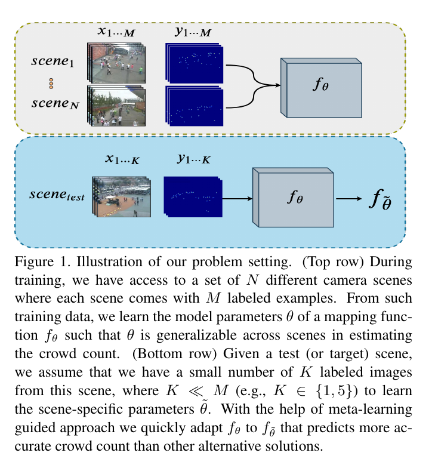

This can be thought as inner update during meta-learning and the optimization is expressed as: $\tilde{\thetai} = \theta - \alpha\nabla\theta\mathcal{L\mathcal{T_i}}(f\theta)$, where $\mathcal{L\mathcal{T_i}}(f\theta)$ = $\sum{\mathcal{x^j, y^j}\in\mathcal{D^{train}_i}} ||f\theta(\mathcal{x^j})-y^j||^2$
Here $\mathcal{x^j}$ and $\mathcal{y^j}$ denotes the image and corresponding ground truth density map from the scene $\mathcal{T_i}$.
WordlExpo'10
Mall
UCSD
Ground Truth Density Maps
Implementation:
Evaluation Metrics
Baseline Pretrained:
Baseline Fine-tuned:
Meta pre-trained: